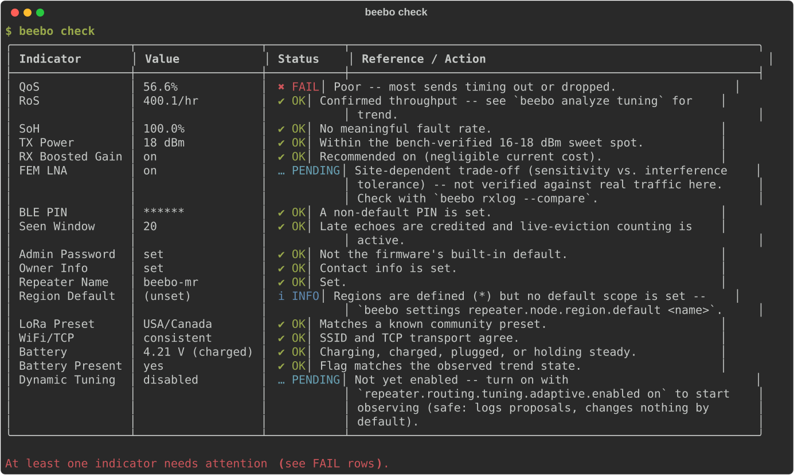

Health Check¶
beebo check is a one-shot check-up: one row per indicator, a verdict, and — when it isn't simply OK — what to do about it. The verdict levels, in the sense a blood-test report uses them:

| Verdict | Meaning |
|---|---|
OK |
In range. |
INFO |
Technically fine, but worth a look — not actually a problem. |
PENDING |
Nothing wrong, but a decision hasn't been made yet, or not enough data exists to judge. |
WARN |
Outside range but not broken — a choice worth reconsidering. |
FAIL |
Actively wrong or hurting the node. |
Where each indicator's data comes from matters, because check deliberately does none of beebo analyze's windowed aggregation — it's a point-in-time snapshot, not a historical trend. Every indicator is one of these kinds:
- Live MonRing counters — QoS, RoS and SoH, computed fresh in firmware (
MonRing::computeQos()/computeRos()/computeSoh()) from lifetime running counters on every header request. QoS is a ratio and RoS its raw-volume companion; neither is the same as SoH: a node can be fully healthy (SoH 100%, no internal faults) while QoS is degraded by an honestly weak link, and conversely a struggling node's internal faults show up in SoH even if QoS still looks fine. The tuners score their windows with the weighted objective described in Performance Tuning, not with these lifetime figures. - Live device setting — read fresh from the connected node right now (TX Power, RX Boosted Gain, FEM LNA, and the other settings rows).
- Live tuning setting — the adaptive optimizer's own switches (Dynamic Tuning, Tuning Visibility).
- Latest resident snapshot — the newest still-in-the-ring
battrecord (Battery, Battery Present). If the ring has wrapped past it, the check reportsPENDINGrather than guessing.
beebo analyze is the separate command for the windowed/aggregated indicators (tx_success_rate, wrong_hop_rate, cad_busy_rate, SNR/RSSI/noise-floor means, the tuners' objective score, ...) computed by bucketing a downloaded set of rx/tx/env records over time — see Analysis and In-Field LNA Comparison below. check and analyze are complementary, not overlapping: check answers "is anything wrong right now," analyze answers "how has this been trending."
| Indicator | Source | What it means |
|---|---|---|
| QoS | Live MonRing counters (MonRing::computeQos()) |
Confirm ratio: (ack_success + echo_success) / (ack_success + ack_timeout + echo_attempts), 0-100%; PENDING until 20 confirmable attempts. OK ≥95%, INFO 80-95%, WARN 60-80%, FAIL <60%. |
| RoS | Live MonRing counters (MonRing::computeRos()) |
Confirmed deliveries per hour of uptime (ack_success + echo_success). OK if above zero, WARN if zero despite enough attempts, PENDING before 20 attempts. No fixed healthy band: traffic varies too much. |
| SoH | Live MonRing counters (MonRing::computeSoh()) |
Internal-health rate: 1 - (internal faults / total rx+tx activity), 0-100%, so a long-uptime node isn't penalized just for having processed more traffic. OK ≥99%, INFO 95-99%, WARN 80-95%, FAIL <80%. |
| TX Power | Live role's setting (companion.radio.txpower/repeater.radio.txpower) |
Bench-verified 16-18 dBm sweet spot for the V4.3 KCT8103L PA — below underdrives it (WARN), above buys no extra delivery benefit (INFO). |
| RX Boosted Gain | Live role's setting (companion.radio.rxgain/repeater.radio.rxgain) |
Recommended on (negligible current cost) — WARN if off. |
| FEM LNA | Live role's setting (companion.fem.rxgain/repeater.fem.rxgain) |
Sensitivity-vs-interference-tolerance tradeoff, site-dependent — always PENDING until verified against real traffic with beebo rxlog --compare or the LNA setting trial, never a pass/fail. |
| BLE PIN | Live role's node.ble.pin |
INFO while unset (falls back to the build's default PIN). |
| Seen Window | repeater.routing.seen_window (repeater only) |
WARN at 0: late echoes are no longer credited (the confirm ratio charges them as failures) and live-eviction counting is off, so rx_dedup_table_full no longer reflects reality. |
| Admin Password | Repeater admin password (repeater only) | WARN while it is still the firmware's built-in default. |
| Owner Info, Repeater Name | repeater.node.owner.info, repeater.node.name (repeater only) |
INFO while unset. |
| Region Default | repeater.node.region.default (repeater only) |
PENDING when no regions exist yet, INFO when regions exist but no default scope is set. |
| LoRa Preset | Live role's radio.lora.* |
INFO when freq/bw/sf/cr match no known community preset. |
| WiFi/TCP | Live role's node.wifi.ssid and node.transport.tcp |
WARN when TCP is on with no SSID, INFO when an SSID is set but TCP is off. |
| Battery | Latest resident batt record |
PENDING while the trend is still settling after boot/an edge. OK while charging/charged/plugged/stable. While discharging: OK above ~30% estimated charge, WARN 15-30%, FAIL below 15%. |
| Battery Present | board.battery.present against the trend state |
PENDING if never declared; WARN when the flag contradicts the observed state (present yes but always plugged, or no but not plugged). |
| Dynamic Tuning | Live settings (repeater.routing.tuning.adaptive.enabled/.applied) |
PENDING if disabled, or enabled but still observe-only (nothing live-actuated yet). OK once at least one parameter is live-actuating. See The Adaptive Tuner. |
| Tuning Visibility | Live setting (monitor.tuning) + Dynamic Tuning's own verdict |
Only shown when it's actually actionable: the optimizer is live-actuating but adaptive records aren't being captured, so its proposals are invisible — WARN in that specific case, otherwise omitted from the table entirely. |
The settings-derived rows (TX Power through WiFi/TCP) are shared with beebo config check, which runs only those against a saved template. Faults, queue drops and the raw diagnostic counters are not part of check; read them with beebo monitor status (see Reading monitor status) and beebo monitor decode -k event.
On the node console, check prints the QoS and SoH lines with the same bands and wording, so a phone can read the two scores that matter most. The other rows need beebo check.
$ gatto check
╭─────────────────┬──────────────────────┬───────────┬──────────────────────────────────────────╮
│ Indicator │ Value │ Status │ Reference / Action │
├─────────────────┼──────────────────────┼───────────┼──────────────────────────────────────────┤
│ QoS │ 98.4% │ ✔ OK │ Excellent. │
│ RoS │ 41.2/hr │ ✔ OK │ Confirmed throughput -- see `beebo │
│ │ │ │ analyze tuning` for trend. │
│ SoH │ 100.0% │ ✔ OK │ No meaningful fault rate. │
│ TX Power │ 18 dBm │ ✔ OK │ Within the bench-verified 16-18 dBm │
│ │ │ │ sweet spot. │
│ RX Boosted Gain │ on │ ✔ OK │ Recommended on (negligible current │
│ │ │ │ cost). │
│ FEM LNA │ off │ … PENDING │ Site-dependent trade-off -- not verified │
│ │ │ │ against real traffic here. │
│ Battery │ 3.93 V (discharging) │ ✔ OK │ ~67% estimated charge, discharging │
│ │ │ │ normally. │
│ Battery Present │ yes │ ✔ OK │ Flag matches the observed trend state. │
│ Dynamic Tuning │ observe-only │ … PENDING │ Enabled but not live-actuating any │
│ │ │ │ parameter yet. │
╰─────────────────┴──────────────────────┴───────────┴──────────────────────────────────────────╯
Nothing wrong, but some checks need a decision or more data (see PENDING rows).